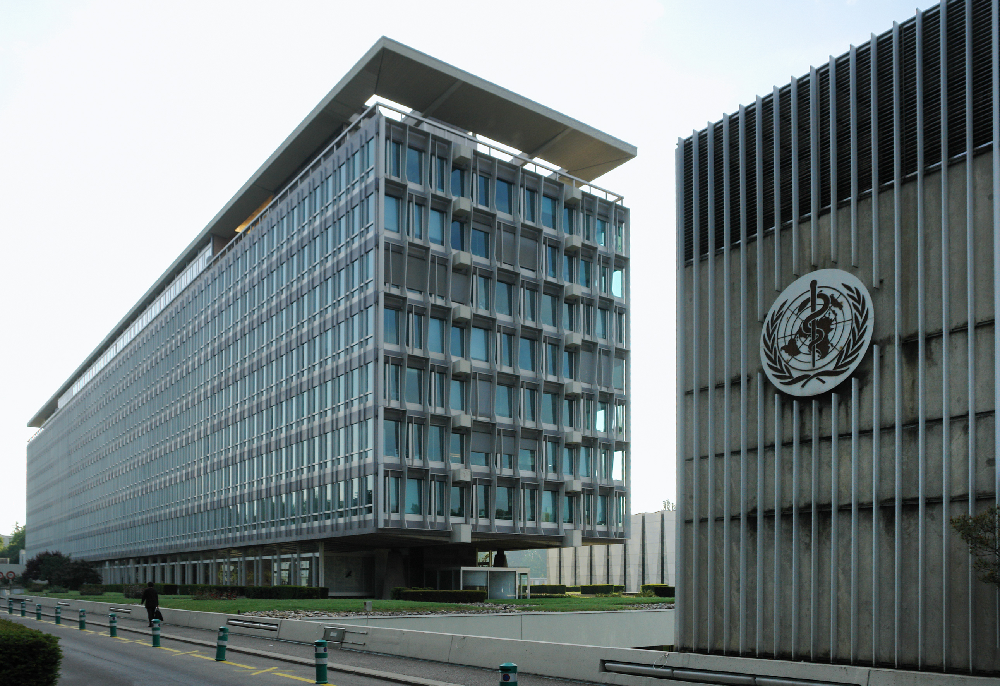
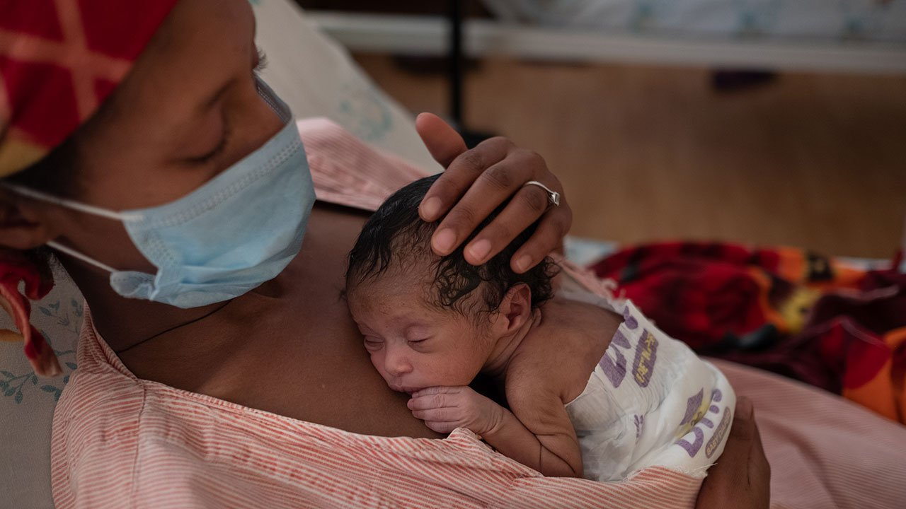
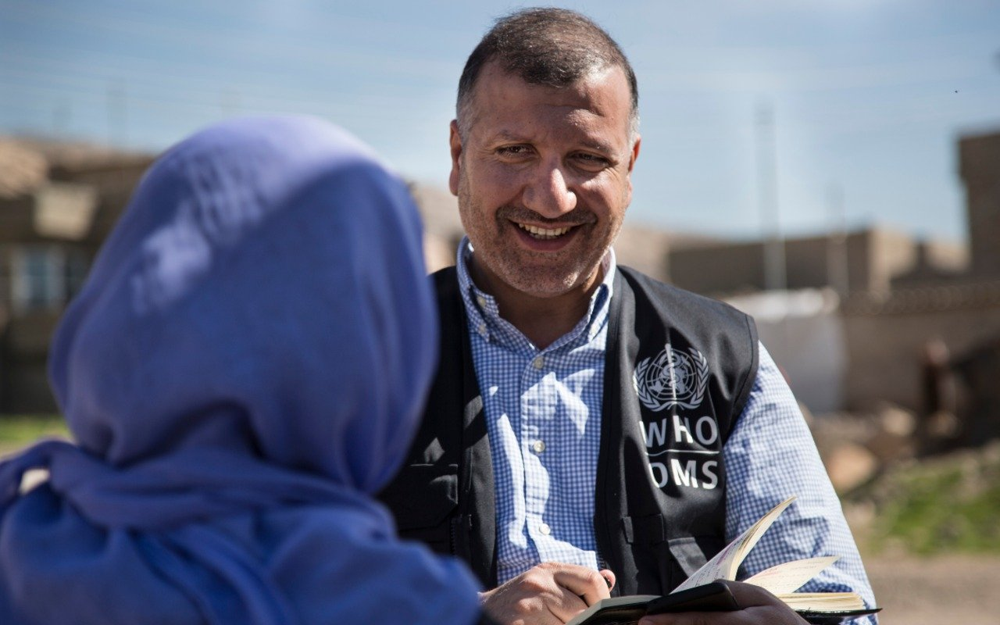
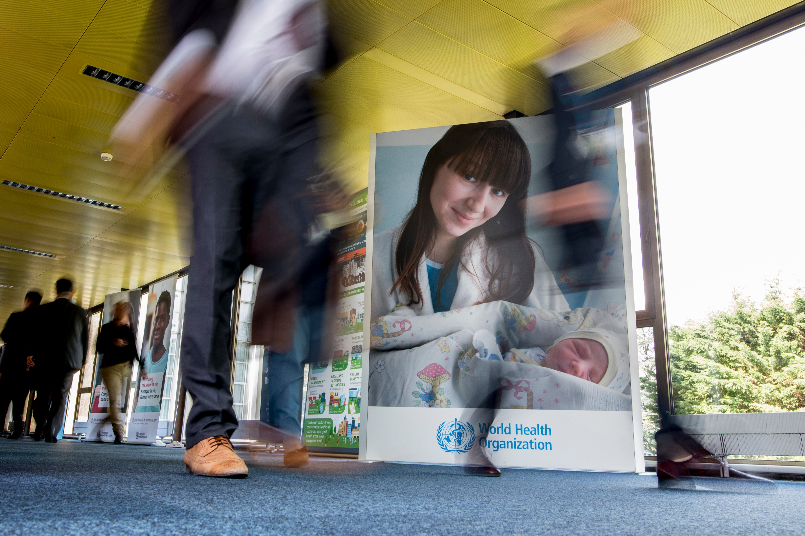
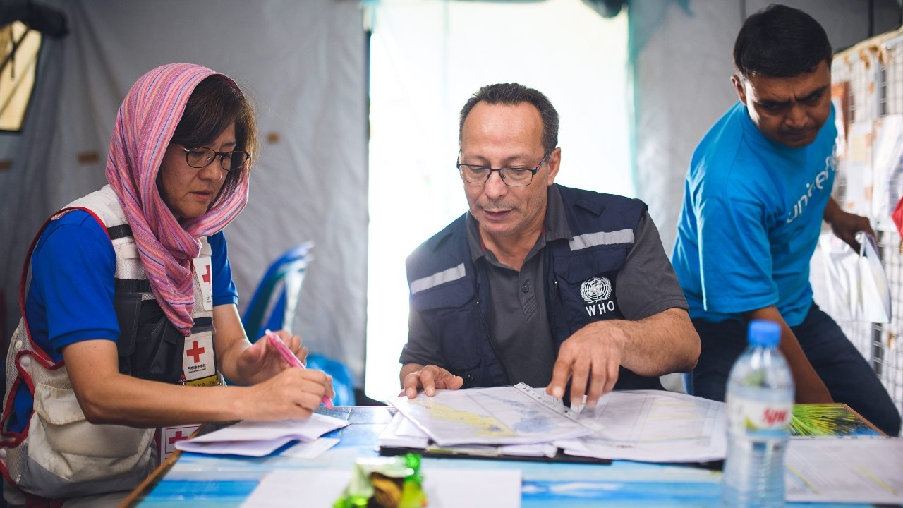

ABOUT WHO
ABOUT WHO
Dedicated to the well-being of all people and guided by science,the World Health Organization leads and champions global efforts to give everyone,everywhere an equal chance to live a healthy life.

WHO leads global efforts to expand universal health coverage. We direct and coordinate the world’s response to health emergencies. And we promote healthier lives – from pregnancy care through old age. Our Triple Billion targets outline an ambitious plan for the world to achieve good health for all using science-based policies and programmes.
Where We Work?

Working with 194 Member States across 6 regions and on the ground in 150+ locations, the WHO team works to improve everyone’s ability to enjoy good health and well-being.
How we are governed?
 WHO’s work remains firmly rooted in the basic principles of the right to health and well-being for all people, as outlined in our 1948 Constitution. The World Health Assembly is the decision-making body of WHO and is attended by delegations from all Member States.
| Date |
Meetings in 2022 |
24-29 January 2022 |
150th session of the Executive Board |
| 22-28 May 2022 |
Seventy-fifth World Health Assembly |
| 30 May 2022 |
151st session of the Executive Board |
Who we work with?

Collaboration is at the heart of all we do. Every day we connect nations, partners and experts so that we can go further, together. Our partners help support WHO’s scientific work and field programmes, contribute funding and resources, engage in our campaigns and programmes and join us in advocacy to bring policy and behaviour change for better health.Partnerships help us to deliver life-saving vaccines and supplies, raise funds for the Triple Billion Targets, establish consensus among leading scientists and much more. From world leaders to international organizations, civil society, foundations, researchers and health workers, we mobilize every part of society to achieve health and safety for all.
HISTORY